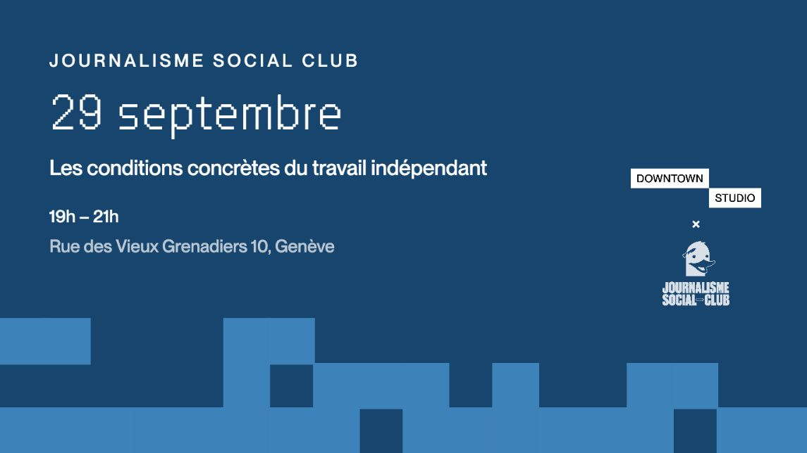

Rencontrer / Journalisme Social Club
Les conditions concrètes du travail indépendant
Mardi 29 septembre 2026Journalisme Social Club

Facturer à la journée ou à la pige, négocier ses tarifs, cumuler les mandats : le quotidien des journalistes indépendants reste dans l'angle mort de la profession.
Quels revenus en attendre, quels droits face à une rédaction, quels besoins pour que ce statut soit viable ? Avant la soirée, l'AGJ a mené un sondage anonyme auprès des journalistes indépendants.
Avec
- Gabriel Tejedor
- Gilles Labarthe
- Mélissa Henry